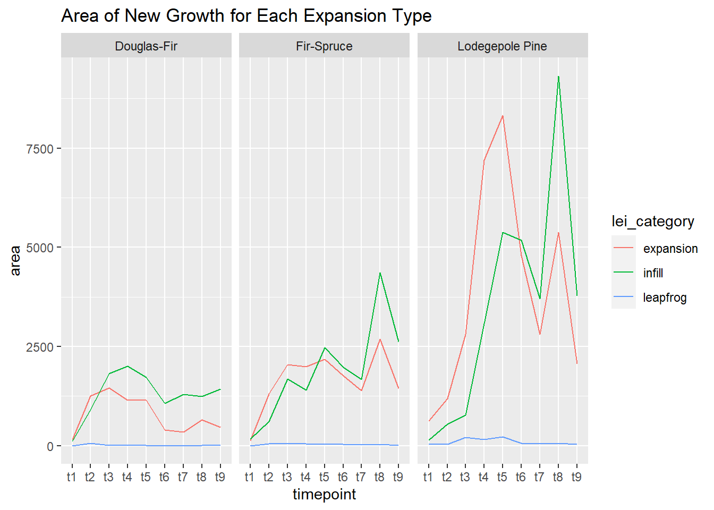
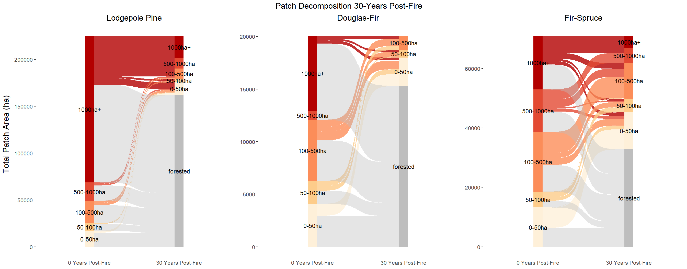

Part 16 Edge Encroachment
16.1 Set Up
16.1.1 Import Libraries
library(sf)
library(terra)
library(mapview)
library(raster)
library(tidyverse)
library(ggplot2)
library(cowplot)# import high-severity patches
patches_df <- st_read("data/patches/highsev_patches.shp") %>%
mutate(Patch_ID = str_c(Fire_ID,"-",1:n())) %>%
st_transform(crs = "EPSG:4326") %>%
st_drop_geometry()## Reading layer `highsev_patches' from data source
## `G:\Other computers\My Laptop\Documents\Grad School\Research\ConiferRegeneration\data\patches\highsev_patches.shp'
## using driver `ESRI Shapefile'
## Simple feature collection with 5904 features and 10 fields
## Geometry type: POLYGON
## Dimension: XY
## Bounding box: xmin: -118.6156 ymin: 42.57637 xmax: -106.96 ymax: 48.92836
## Geodetic CRS: WGS 84types <- c("Douglas-Fir","Fir-Spruce","Lodegepole Pine")
# large_patch_df <- patches_df %>%
# filter(ptch_r_ >100,
# ptch_fr %in% types)dist_df <- do.call(rbind,lapply(list.files(path = "data/edge_distance", pattern = "Fire", all.files=TRUE, full.names=TRUE),read_csv))
lei_df <- do.call(rbind,lapply(list.files(path = "data/lei", pattern = "Fire", all.files=TRUE, full.names=TRUE),read_csv))
lei_simple_df <-do.call(rbind,lapply(list.files(path = "data/lei_simple", pattern = "Fire", all.files=TRUE, full.names=TRUE),read_csv))
lsm_df <- do.call(rbind,lapply(list.files(path = "data/lsm", pattern = "Fire", all.files=TRUE, full.names=TRUE),read_csv))16.2 LEI
lei_summary <- lei_df %>%
group_by(lei_category,ptch_fr,timepoint) %>%
summarize(n=n(),
area=sum(newgrowth_area_ha)) %>%
filter(ptch_fr %in% c("Douglas-Fir","Fir-Spruce","Lodegepole Pine"))## `summarise()` has grouped output by 'lei_category', 'ptch_fr'. You can override
## using the `.groups` argument.ggplot(lei_summary,aes(timepoint,area,color= lei_category,group=lei_category))+
geom_line()+
facet_wrap(~ptch_fr)+
labs(title = "Area of New Growth for Each Expansion Type")
lei_simple_summary <- lei_simple_df %>%
left_join(patches_df) %>%
filter(ptch_fr %in% c("Douglas-Fir","Fir-Spruce","Lodegepole Pine"))## Joining, by = "Patch_ID"# ggplot(lei_simple_summary,aes(timepoint,lei,color = ptch_fr,group=Patch_ID)) +
# geom_line() +
# labs(title = "Area of New Growth for Each Expansion Type")
lei_simple_summary2 <- lei_simple_df %>%
left_join(patches_df)%>%
group_by(ptch_fr,timepoint) %>%
summarize(lei=mean(lei))%>%
filter(ptch_fr %in% c("Douglas-Fir","Fir-Spruce","Lodegepole Pine"))## Joining, by = "Patch_ID"
## `summarise()` has grouped output by 'ptch_fr'. You can override using the
## `.groups` argument.ggplot(lei_simple_summary2,aes(timepoint,lei,color = ptch_fr,group=ptch_fr)) +
geom_line()+
labs(title = "LEI Over Time for Each Forest Type")
16.3 Distances
16.3.1 Of All Growth
types <- c("Lodegepole Pine","Douglas-Fir","Fir-Spruce")
dist_summary_all <- dist_df %>%
filter(growth_type=="all growth") %>%
left_join(.,patches_df,by="Patch_ID") %>%
filter( ptch_fr %in% types) %>%
group_by(ptch_fr,timepoint,edge_dist_m) %>%
summarize(count = sum(count))
# ggplot(dist_summary_all,aes(edge_dist_m,weight=count,fill=ptch_fr))+
# geom_histogram(bins =6,position ="dodge")+
# facet_wrap(~timepoint) +
# labs(title = "Distance of Growth from Patch Edge")
plot1 <- ggplot(dist_summary_all %>% filter(ptch_fr=="Lodegepole Pine"),aes(edge_dist_m,weight=count))+
geom_histogram(bins =17)+
facet_grid(~timepoint) +
theme(axis.text.x = element_text(angle = 90))
plot2 <- ggplot(dist_summary_all %>% filter(ptch_fr=="Douglas-Fir"),aes(edge_dist_m,weight=count))+
geom_histogram(bins =17)+
facet_grid(~timepoint) +
theme(axis.text.x = element_text(angle = 90))
plot3 <- ggplot(dist_summary_all %>% filter(ptch_fr=="Fir-Spruce"),aes(edge_dist_m,weight=count))+
geom_histogram(bins =17)+
facet_grid(~timepoint) +
theme(axis.text.x = element_text(angle = 90))
plot_grid(plot1,plot2,plot3,labels=types,ncol=1)
16.3.2 Of New Growth
dist_summary_new <- dist_df %>%
filter(growth_type=="new growth") %>%
left_join(.,patches_df,by="Patch_ID") %>%
filter( ptch_fr %in% types) %>%
group_by(ptch_fr,timepoint,edge_dist_m) %>%
summarize(count = sum(count))
# ggplot(dist_summary_new,aes(edge_dist_m,weight=count,fill=ptch_fr))+
# geom_histogram(bins =6,position ="dodge")+
# facet_wrap(~timepoint)+
# labs(title = "Distance of New Growth from Patch Edge")
plot1 <- ggplot(dist_summary_new %>% filter(ptch_fr=="Lodegepole Pine"),aes(edge_dist_m,weight=count))+
geom_histogram(bins =17)+
facet_grid(~timepoint) +
theme(axis.text.x = element_text(angle = 90))
plot2 <- ggplot(dist_summary_new %>% filter(ptch_fr=="Douglas-Fir"),aes(edge_dist_m,weight=count))+
geom_histogram(bins =17)+
facet_grid(~timepoint) +
theme(axis.text.x = element_text(angle = 90))
plot3 <- ggplot(dist_summary_new %>% filter(ptch_fr=="Fir-Spruce"),aes(edge_dist_m,weight=count))+
geom_histogram(bins =17)+
facet_grid(~timepoint) +
theme(axis.text.x = element_text(angle = 90))
plot_grid(plot1,plot2,plot3,labels=types,ncol=1)
16.4 Landscape Metrics
lsm_summary_nn <- lsm_df %>%
filter(metric == "enn_mn",
ptch_fr %in% types,
timepoint != "t0") %>%
group_by(ptch_fr,timepoint) %>%
summarize(nn= mean(value,na.rm=TRUE))## `summarise()` has grouped output by 'ptch_fr'. You can override using the
## `.groups` argument.ggplot(lsm_summary_nn,aes(timepoint,nn,color = ptch_fr,group=ptch_fr))+
geom_line()+
labs(title = "Nearest Neighbor Distances of Conifer Regrowth")
lsm_summary_pland <- lsm_df %>%
filter(metric == "pland",
ptch_fr %in% types,
timepoint != "t0") %>%
group_by(ptch_fr,timepoint) %>%
summarize(pland= mean(value,na.rm=TRUE)) ## `summarise()` has grouped output by 'ptch_fr'. You can override using the
## `.groups` argument.ggplot(lsm_summary_pland,aes(timepoint,pland,color = ptch_fr,group=ptch_fr))+
geom_line() +
labs(title = "Percent of Land Area Occupied by Conifers")